Quick Start Guide
These are the basic features to get you started. The full feature list is in How to Use Vantage, just below this guide in Settings.
Add a Task
1. Task List. Tasks show up here — tap the circles to add them to Today’s Plan.
2. Voice. Push and hold until you’re done. Vantage sorts the information for you.
3. Type. Same, but you type in the information.
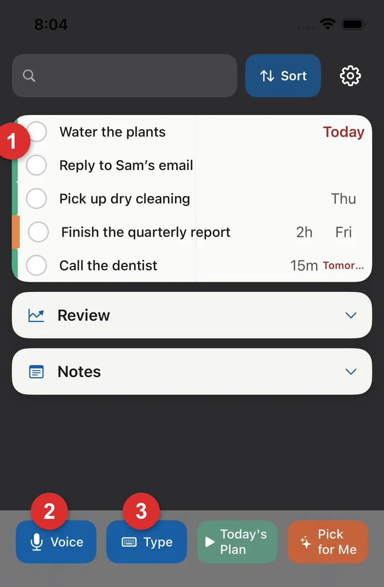
4. Parsed fields are blue; Vantage’s guesses are amber — tap to confirm or edit. Flip Calendar on to also add the task to your calendar.
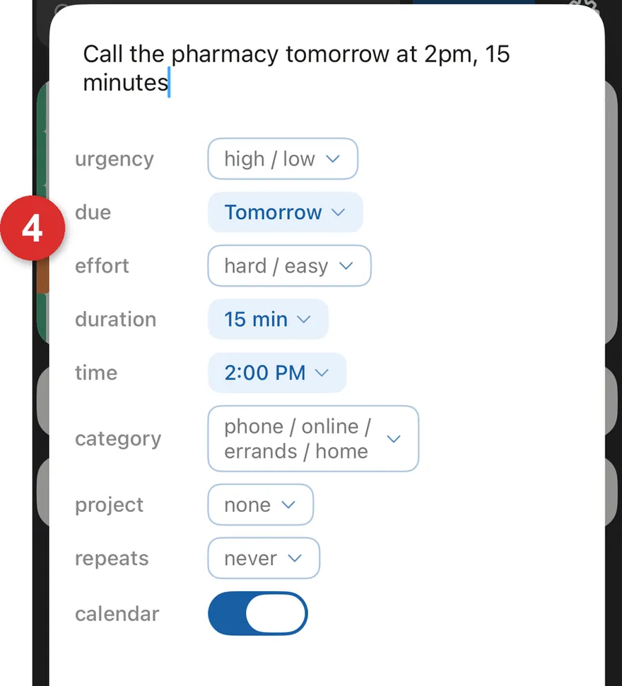
5. Siri. Say “Hey Siri, add a task in Vantage,” and follow the prompts to capture tasks on the run.
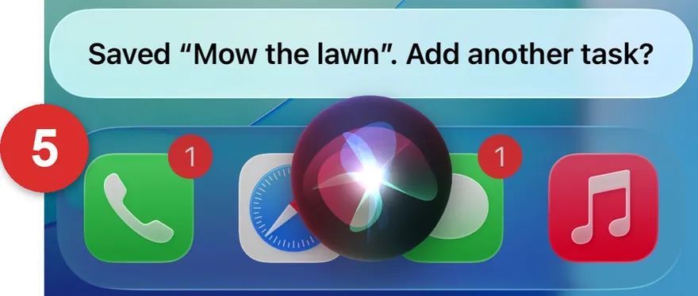
6. Complete a task. Press and hold a task in the main list, or tap Complete in Focus Mode.
7. Task details. Tap a task name to see its details, add more info, or turn it into a Note.
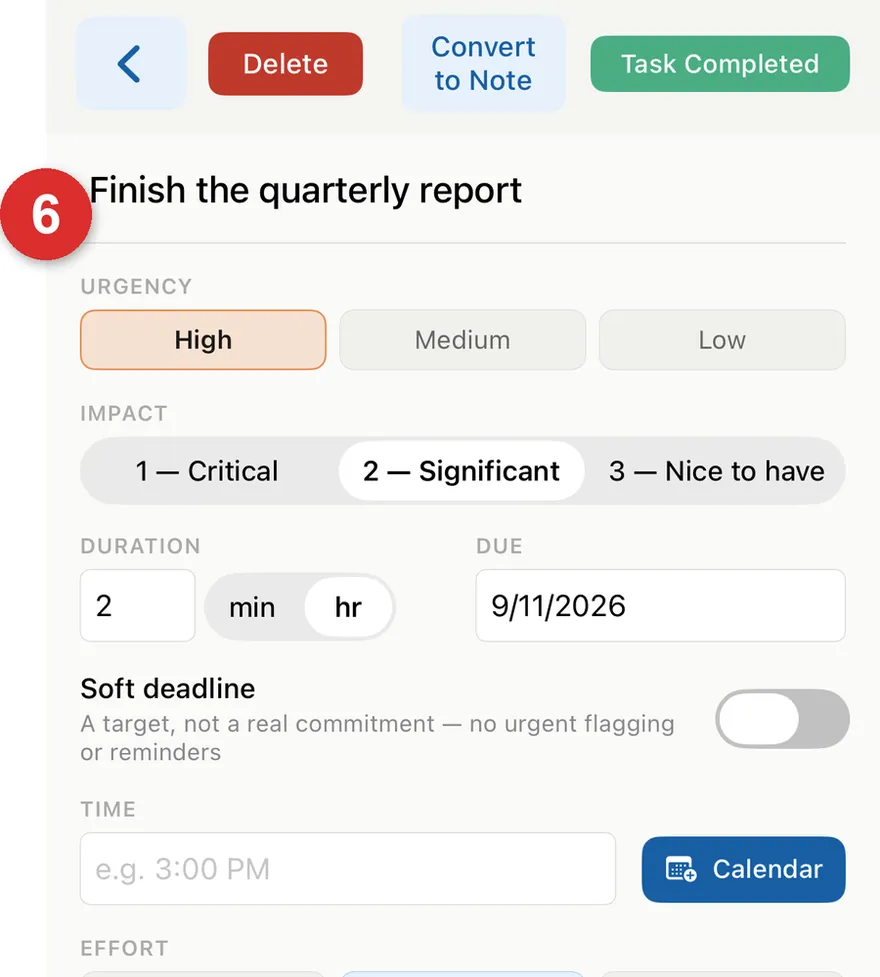
Plan Your Day
8. Today’s Plan. Shows only the tasks you selected so you can focus on today.
9. Pick for Me. Tell Vantage how much time you have, and it creates a plan that fits, based on urgency and due dates.
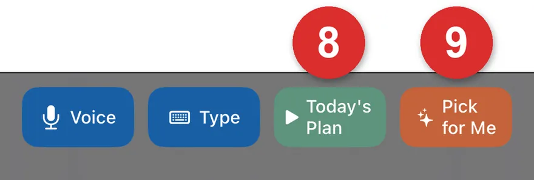
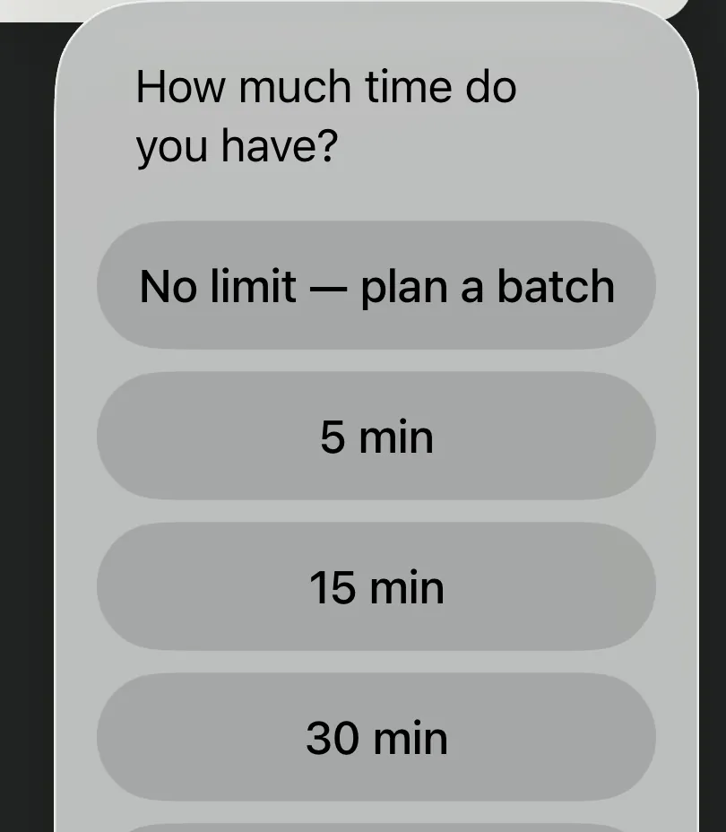
10. Drag the three lines to reorder your selected tasks.
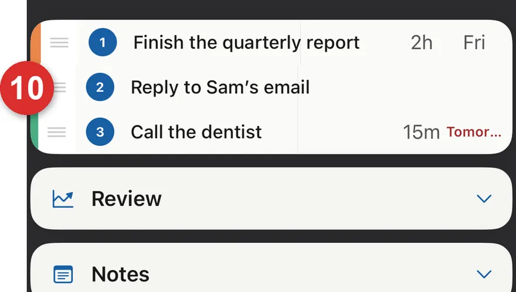
Focus Mode
11. One task at a time, with a timer. Cycle between tasks — each pauses until you return. No estimated duration yet? Set it here too.
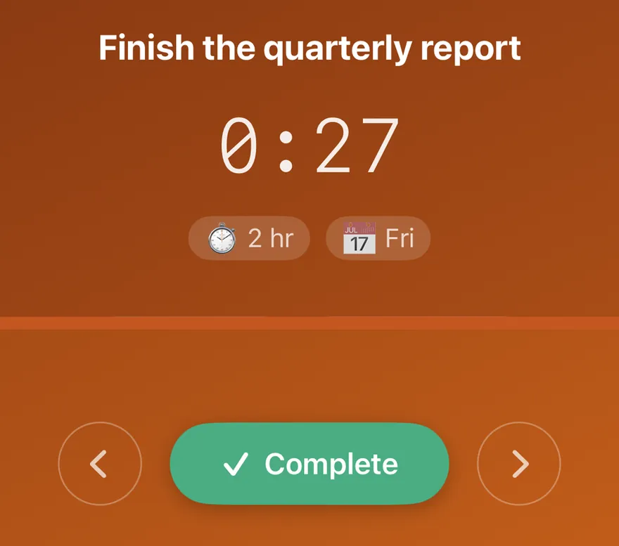
Notes
12. Anything can become a Note instead of a task, and back again — search notes, or group them by category or project.
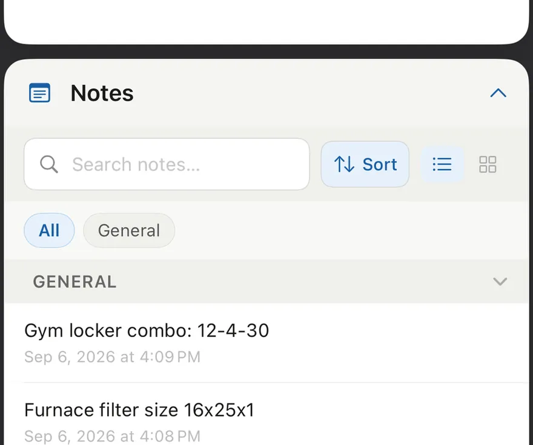
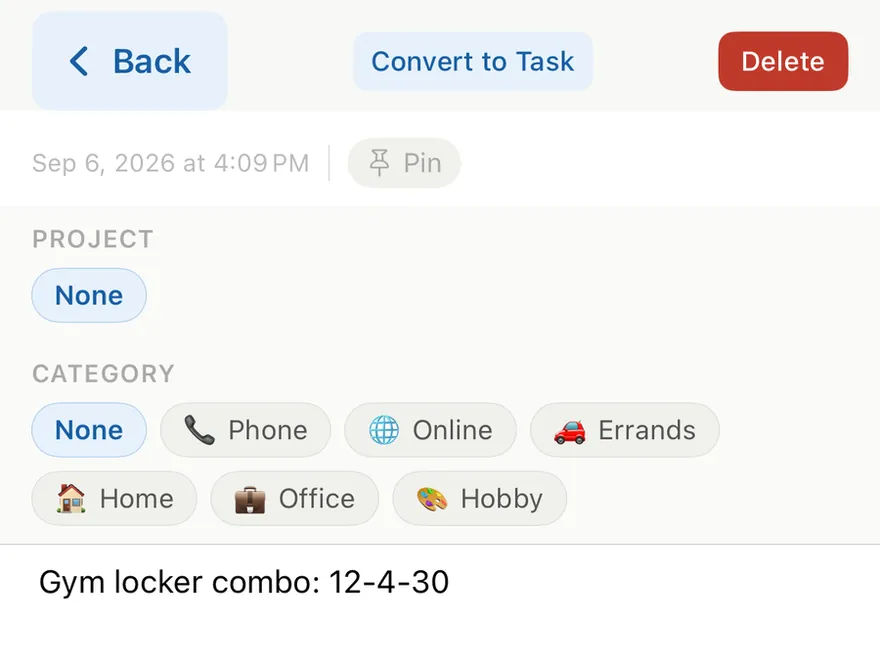
Review
13. Review has five parts:
- Looking Back — what you did recently.
- Needs Attention — things you might forget, or that are overdue.
- Looking Forward — what’s coming up in the next week or so.
- Make Adjustments — add goals and link tasks to them so you can track your progress.
- Vantage Noticed — patterns Vantage notices in how you work over time.
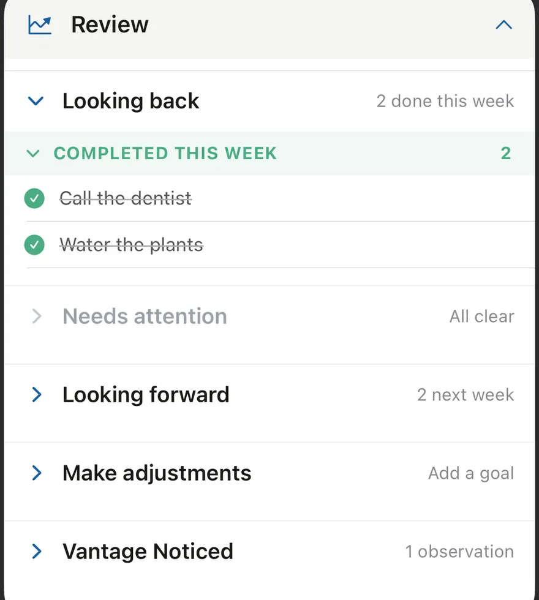
Settings
14. What’s in Settings:
- Set daily reminders
- Adjust hints and preferences
- Manage projects
- Back up / restore your data
- Send us feedback
- Find the How to Use Vantage guide
Check it out when you’re ready.
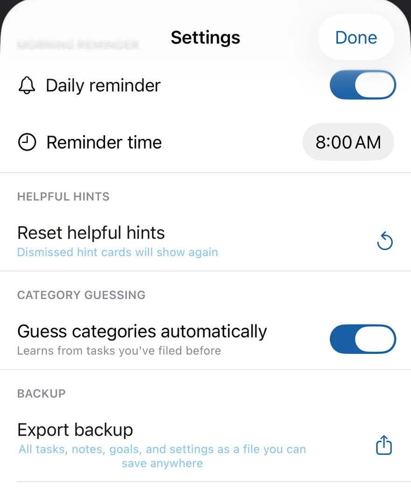
Additional Features
See How to Use Vantage in Settings for details.
Categories & Projects organize tasks by where you’ll do them, or what project they’re for
Goals capture your goals or dreams, link tasks to them, and track your goal progress
Subtasks break a task down into smaller subtasks
Depends on make a task depend on another one — it stays hidden until the first task is done
Recurring tasks mark a task as recurring, and set how often and when it reappears in the list
Calendar add a task with a due date (or date and time) to your default calendar with one tap
Sort & group sort tasks by duration, due date, and more; group notes by category or project
Search search tasks by task name, or notes by note name
Widget see your next few tasks right on your Home Screen or Lock Screen